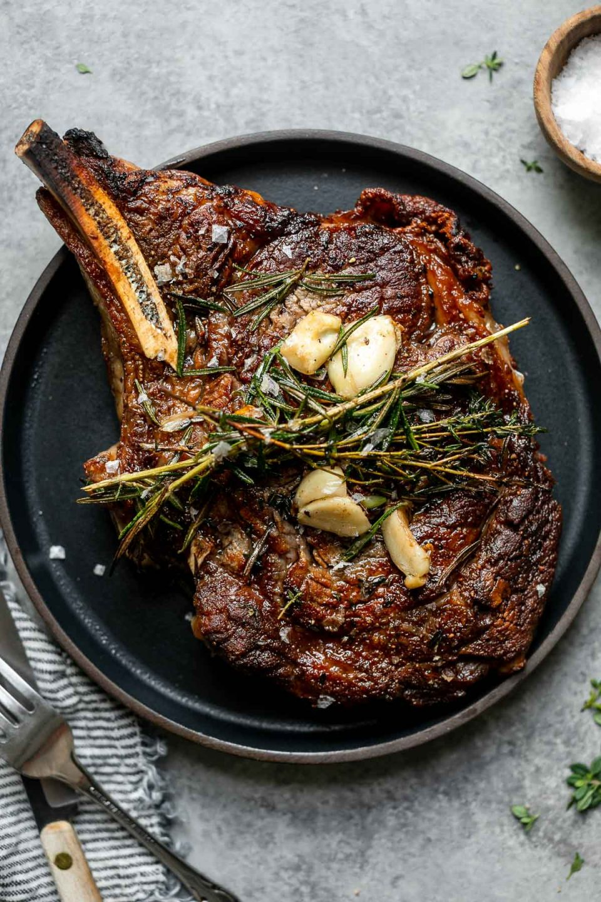

Cast Iron Steak

Description
This juicy and aromatic steak recipe will be cooked in a hot cast iron pan. This method will give it a beatiful and tasty crust while retaining the moisture of the steak. It is finished off by basting it with butter, thyme, rosemary, and garlic.
Ingredients
- 1 lb New York Strip Steak
- Kosher Salt
- 2 Tbs Grapeseed Oil
- 2 Tbs Unsalted, Grassfed Butter
- 8 Sprigs of Thyme
- 4 Sprigs of Rosemary
- 3 Garlic Cloves, smashed
- Maldon Salt
Steps
- 2 hours to 24 hours before you want to cook your meal, dry brine your steak. To Dry Brine you will pat your steaks dry and then generously coat all sides with kosher salt. Then loosely wrap in paper towel and place on a rack in the coldest part of your refrigerator.
- Remove steak from the fridge at least 30 min before cooking to allow to come up to room temperature
- Place cast iron pan in a cold oven and preheat to 450f
- When the oven is preheated, place pan on burner set to Medium-high to High
- Drizzle oil on pan to coat the bottom. Heat until barely smoking
- Place steak on the hot pan, turning every 30 seconds until medium rare. About 6 min
- Add butter, thyme, rosemary, and garlic to the pan and tilt to form a 'pool' of butter on one side
- Spoon the butter mixture over the steak, focusing on any less cooked spots, for 1.5 minutes
- Remove steak from pan and loosely tent it with foil. Let rest for 5 min before cutting
- Cut steak against the gran into slices and top with a sprinkle of Maldon Salt